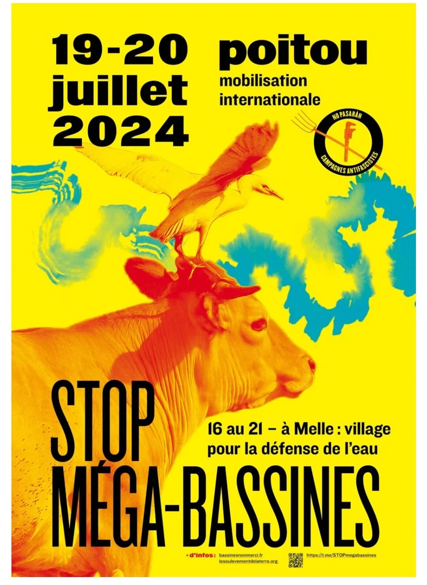
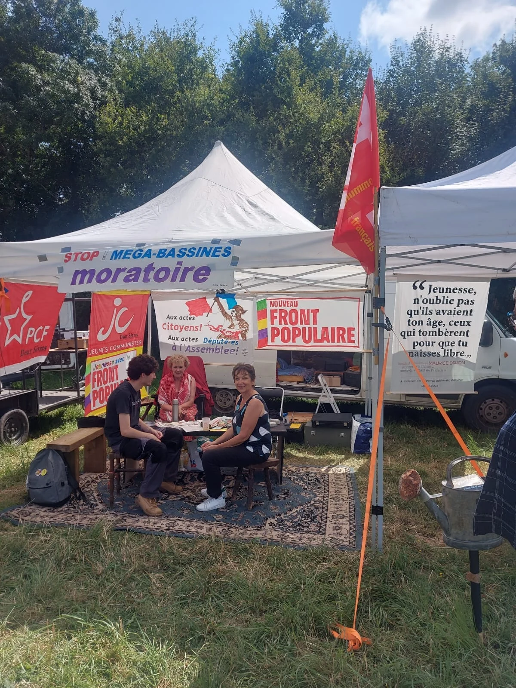

Reportage en images
Au Village de l’eau à Melle, notre stand pour un moratoire sur les mégabassines
Date indiquée par Facebook · 18 juillet 2024
Repères éditoriaux
Nous avons publié la photo du stand du PCF et du Nouveau Front populaire au Village de l’eau à Melle. L’affiche jointe annonce le programme du village du 16 au 21 juillet 2024 et la mobilisation des 19 et 20 juillet.
Texte conservé avec la publication
Stand #nouveaufrontpopulaire #PCF au village de l'eau.


Sources
Archive rouge · export Facebook · AR-0002-FB-01317
À lire aussi · « Eau, climat, agriculture et paix ! » Notre lettre ouverte du 11 juillet